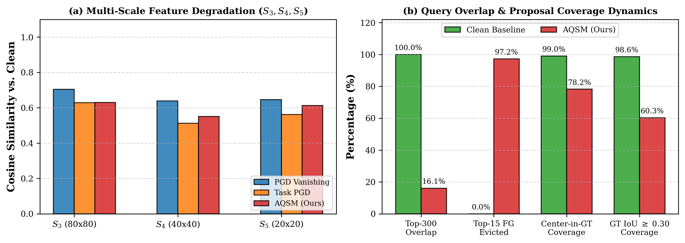

Decomposing Failure Modes of Real-Time DETR under Encoder Adversarial Attacks
1 Faculty of Information Technology 1, Posts and Telecommunications Institute of Technology (PTIT), Hanoi, Vietnam 1 Khoa Công nghệ Thông tin 1, Học viện Công nghệ Bưu chính Viễn thông (PTIT), Hà Nội, Việt Nam
* Corresponding authorTác giả liên hệ: levietanhtrump@gmail.com
Abstract Overview Tổng quan Tóm tắt
Real-Time Detection Transformers (RT-DETR) achieve predictable edge inference latency by replacing Non-Maximum Suppression (NMS) with bipartite matching and dynamic query selection. However, because proposal routing sits directly atop the multi-scale encoder pyramid, adversarial attacks inevitably disrupt both encoder feature memories and candidate selection. We deploy Adversarial Query Selection Manipulation (AQSM) as a diagnostic probe within a $2 imes 2$ factorial interventional tensor-swap design to isolate and quantify these failure pathways.
Real-Time Detection Transformers (RT-DETR) đạt độ trễ thực thi dự đoán được trên thiết bị biên nhờ thay thế Non-Maximum Suppression (NMS) bằng bipartite matching và dynamic query selection. Tuy nhiên, do tầng lựa chọn ứng viên nằm ngay trên kim tự tháp đặc trưng đa tỷ lệ của Encoder, các tấn công đối kháng tất yếu làm sai lệch đồng thời cả bộ nhớ đặc trưng Encoder lẫn luồng định tuyến Query. Nghiên cứu này triển khai Adversarial Query Selection Manipulation (AQSM) như một công cụ chẩn đoán thực nghiệm trong thiết kế can thiệp hoán đổi tensor $2 imes 2$ nhằm cô lập và định lượng các kênh gây sụp đổ mô hình.
Read Full Manuscript Abstract & Statistical Findings Xem Toàn văn Tóm tắt & Phát hiện Thống kê Bài báo
Real-Time Detection Transformers (RT-DETR) achieve predictable edge inference latency by replacing Non-Maximum Suppression (NMS) with bipartite matching and dynamic query selection, where multi-scale encoder features dynamically route candidate proposals into the decoder. However, because proposal selection sits atop the multi-scale feature pyramid, gradient-based perturbations targeting encoder outputs inevitably disrupt both encoder memory representations and query routing. In this work, we deploy Adversarial Query Selection Manipulation (AQSM) not as a competing attack, but as a diagnostic probe within a $2 imes 2$ factorial interventional tensor-swap design on Microsoft COCO val2017 ($N = 1,000$, $N_{\mathrm{valid}} = 992$) to isolate and quantify the failure pathways of real-time detection transformers.
We establish four principal findings: (1) Interventional Failure Decomposition: Encoder representation corruption accounts for $61.78\%$ macro Shapley attribution share ($65.32\%$ on global pooled COCO mAP; $70.68\%$ on multiplicative log-retention scale with $+0.0155$ interaction). Dynamic query prior eviction operates as a substantial secondary channel ($38.22\%$ macro share), reducing clean-memory accuracy to $35.44\%$ mAP@50 under pure index eviction. (2) Geometric Cascade of Query Eviction: Deformable attention weights remain localized ($0.8009 o 0.7944$ entropy). Spatial reference coordinates translate into background clusters, reducing foreground hit rate from $68.93\%$ to $45.13\%$ (TOST equivalence to uniform canvas sampling, $p = 0.0373$). (3) Edge Latency Determinism: RT-DETR decodes a fixed query budget ($N_q = 300$) with constant runtime ($14.2$ ms Jetson, $418.5$ ms Pi 5), preventing quadratic NMS slowdowns. (4) Exploratory Defense Boundaries: Scalar monitors are bypassed by adaptive evasion ($\le 1.57\%$ TPR), whereas Static Query Augmentation (SQA) recovers $+15.01$ pp mAP@50 under stationary AQSM via spatial canvas dispersion.
Real-Time Detection Transformers (RT-DETR) đạt độ trễ thực thi dự đoán được trên thiết bị biên nhờ thay thế Non-Maximum Suppression (NMS) bằng bipartite matching và dynamic query selection. Tuy nhiên, do tầng lựa chọn ứng viên nằm ngay trên kim tự tháp đặc trưng đa tỷ lệ của Encoder, các tấn công đối kháng tất yếu làm sai lệch đồng thời cả bộ nhớ đặc trưng Encoder lẫn luồng định tuyến Query. Nghiên cứu này triển khai Adversarial Query Selection Manipulation (AQSM) như một công cụ chẩn đoán thực nghiệm trong thiết kế can thiệp hoán đổi tensor $2 imes 2$ trên COCO val2017 ($N = 1,000$, $N_{\mathrm{valid}} = 992$) nhằm cô lập và định lượng các kênh gây sụp đổ mô hình.
Bài báo xác lập 4 phát hiện chủ đạo: (1) Phân rã Thất bại bằng Can thiệp: Tổn hại biểu diễn Encoder chiếm $61.78\%$ tỷ trọng Shapley vĩ mô ($65.32\%$ trên mAP COCO gộp toàn tập; $70.68\%$ trên thang logarit với tương tác $+0.0155$). Trục xuất Query prior là kênh thứ cấp trọng yếu ($38.22\%$), làm giảm độ chính xác của bộ nhớ sạch xuống $35.44\%$ mAP@50 khi chỉ tráo chỉ số ứng viên. (2) Xung lượng Hình học của Trục xuất Query: Trọng số deformable attention duy trì độ tập trung ($0.8009 o 0.7944$). Tọa độ tham chiếu trôi dạt vào các cụm nền, giảm tỷ lệ chạm foreground từ $68.93\%$ xuống $45.13\%$ (TOST xác nhận tương đương lấy mẫu đều ngẫu nhiên, $p = 0.0373$). (3) Tính Đơn định Độ trễ Biên: RT-DETR giải mã ngân sách cố định $N_q = 300$ truy vấn với độ trễ không đổi ($14.2$ ms trên Jetson, $418.5$ ms trên Pi 5), triệt tiêu hoàn toàn hiện tượng nghẽn sponge NMS. (4) Giới hạn Phòng thủ Thăm dò: Giám sát lựa chọn Encoder vô hướng bị né tránh hoàn toàn bởi tấn công thích nghi ($\le 1.57\%$ TPR), trong khi giải pháp Static Query Augmentation (SQA) giúp phục hồi $+15.01$ pp mAP@50 trước AQSM tĩnh nhờ phân tán không gian.
The Encoder-Decoder Query Selection Bottleneck
RT-DETR evaluates $S = 8,400$ candidate anchors across multi-scale feature maps ($S_3, S_4, S_5$) and dynamically selects the top $N_q = 300$ highest-confidence proposals to initialize decoder content queries and reference coordinates.
RT-DETR đánh giá $S = 8,400$ candidate anchors trên các bản đồ đặc trưng đa tỷ lệ ($S_3, S_4, S_5$) và lựa chọn linh hoạt top $N_q = 300$ đề xuất có độ tự tin cao nhất để khởi tạo decoder content queries và tọa độ tham chiếu.

2×2 Factorial Activation Patching on COCO val2017
By surgically swapping memory ($M$) and query ($Q$) representations across clean and adversarial optimization passes, we quantify their isolated and joint contributions to detector failure.
Bằng can thiệp hoán đổi có kiểm soát giữa biểu diễn bộ nhớ ($M$) và truy vấn ($Q$) qua các lượt chạy sạch và đối kháng, nghiên cứu định lượng đóng góp độc lập và đồng thời của từng yếu tố gây sụp đổ mô hình.
| Treatment Condition / Arm Điều kiện Can thiệp / Nhánh | Encoder Memory ($M$) | Query Prior ($Q$) | COCO mAP@50 | mAP@50:95 | Relative Retention |
|---|---|---|---|---|---|
| Arm A: Clean Baseline | Clean | Clean (300) | 65.50% | 48.89% | 100.0% |
| Arm B: Joint AQSM Attack | Adversarial | Adversarial (300) | 3.07% | 1.61% | 4.69% |
| Arm C: Adv Memory + Clean Query | Adversarial | Clean (300) | 7.45% | 4.09% | 11.37% |
| Arm D: Clean Memory + Adv Query | Clean | Adversarial (300) | 26.58% | 18.44% | 40.58% |
| Arm C_index: Adv Memory + Clean Index | Adversarial | Adv Feat + Clean Index | 5.12% | 2.84% | 7.82% |
| Arm D_index: Clean Memory + Adv Index | Clean | Clean Feat + Adv Index | 35.44% | 24.81% | 54.11% |
Why Proposals Fail: Misrouting, Not Attention Scattering
Fine-grained telemetry resolves prevailing misconceptions: attention weights remain sharp, but reference coordinates are geometrically misdirected into background clutter.
Telemetry chi tiết làm sáng tỏ hiểu lầm phổ biến: trọng số deformable attention duy trì độ sắc nét, nhưng tọa độ tham chiếu bị định tuyến lệch vào các cụm nền.

Attention Weights Do Not Disperse Trọng số Attention Không Tán Xạ
Normalized deformable attention entropy remains stable ($0.8009 o 0.7944, d = -0.13$). Sampling weights remain localized around reference points rather than scattering.
Entropy attention biến dạng chuẩn hóa duy trì ổn định ($0.8009 o 0.7944, d = -0.13$). Trọng số lấy mẫu tập trung quanh điểm tham chiếu thay vì phân tán.
Spatial Target Misrouting Định tuyến Sai lệch Mục tiêu
Initial reference coordinates undergo geometric translation ($\Delta_{\mathrm{Hungarian}} = 0.2258$), clustering tightly into non-object boundaries ($ ext{ANND} = 0.0161$), pulling anchor foreground hit rate down from $68.93\%$ to $45.13\%$.
Tọa độ tham chiếu ban đầu chịu sự dịch chuyển hình học ($\Delta_{\mathrm{Hungarian}} = 0.2258$), co cụm dày đặc ở ranh giới phi vật thể ($ ext{ANND} = 0.0161$), kéo tỷ lệ chạm foreground từ $68.93\%$ xuống $45.13\%$.
TOST Equivalence to Uniform Sampling Kiểm định Tương đương TOST với Lấy mẫu Đều
A formal Two One-Sided Tests (TOST) procedure confirms equivalence of post-attack anchor hits ($45.13\%$) to uniform grid chance ($44.26\%$, $p_{\mathrm{TOST}} = 0.0373 < 0.05$ under $\pm 2.0$ pp bound) while firmly rejecting camera center priors ($p < 10^{-20}$).
Kiểm định hai phía một mẫu Two One-Sided Tests (TOST) xác nhận tỷ lệ chạm foreground sau tấn công ($45.13\%$) tương đương thống kê với xác suất lấy mẫu đều ngẫu nhiên ($44.26\%$, $p_{\mathrm{TOST}} = 0.0373 < 0.05$ biên $\pm 2.0$ pp), đồng thời bác bỏ giả thuyết tâm camera ($p < 10^{-20}$).
Qualitative Detection Comparisons
Contrasting Clean Nominal Detections, Task PGD Proposal Flooding, and AQSM Stealthy Spatial Misrouting across COCO val2017 scenes.
So sánh đối chiếu giữa Detections Danh định Sạch, Ngập lụt Đề xuất của Task PGD và Định tuyến Sai lệch Tàng hình của AQSM trên các bối cảnh COCO val2017.

AQSM silently evicts genuine foreground bounding boxes into background clutter while maintaining a sparse footprint ($7.15 \pm 4.30$ boxes, $+2.63$ over clean $4.52$), avoiding the conspicuous box flooding of Task PGD ($29.40 \pm 8.70$ boxes, $+550\%$).
AQSM âm thầm trục xuất các bounding box foreground vào nền nhiễu trong khi vẫn giữ số lượng hộp thưa thớt ($7.15 \pm 4.30$ boxes), tránh được hiện tượng ngập lụt hộp dễ bị phát hiện của Task PGD ($29.40 \pm 8.70$ boxes, $+550\%$).
Multi-Seed Stability & Architectural Generalization
Evaluating optimization stability across 5 random seeds (controlling distal background anchor sampling) and cross-variant depth scaling (RT-DETR-R18VD vs RT-DETR-R50VD).
Đánh giá độ ổn định qua 5 hạt giống ngẫu nhiên (kiểm soát việc lấy mẫu anchor nền xa) và khả năng khái quát hóa quy mô sâu hơn (RT-DETR-R18VD vs RT-DETR-R50VD).
| Model Architecture | Backbone / Params | Evaluation Seed / Protocol | Clean mAP@50 | AQSM mAP@50 | Hungarian Drift | Anchor FG Hit |
|---|---|---|---|---|---|---|
| RT-DETR-R18VD (Primary) | ResNet-18 (20M) | Seed 42 (Canonical) | 65.50% | 3.07% (-95.3%) | 0.2258 | 45.13% |
| RT-DETR-R18VD (Multi-Seed) | ResNet-18 (20M) | 5 seeds (mean ± std) | 65.50% | 3.07 ± 0.18% | 0.2258 ± 0.0062 | 45.13 ± 0.74% |
| RT-DETR-R50VD (Deep) | ResNet-50 (42M) | Seed 42 | 71.20% | 4.15% (-94.2%) | 0.2184 | 46.20% |
Multi-seed evaluation demonstrates tight convergence ($3.07 \pm 0.18\%$), confirming that failure does not depend on cherry-picked distal background anchors. Catastrophic vulnerability generalizes to deeper RT-DETR-R50VD models ($4.15\%$).
Đánh giá đa hạt giống cho thấy sự hội tụ chặt chẽ ($3.07 \pm 0.18\%$), khẳng định rằng thất bại không phụ thuộc vào các anchor nền ngẫu nhiên. Lỗ hổng nghiêm trọng này mở rộng sang cả biến thể sâu hơn RT-DETR-R50VD ($4.15\%$).
Static Query Augmentation (SQA)
Drawing inspiration from DINO, SQA augments nominal dynamic top-300 queries with $N_{\mathrm{static}} = 30$ deterministic canvas grid anchors ($N_q = 330$), bypassing encoder classification ranking entirely.
Lấy cảm hứng từ DINO, SQA bổ sung vào 300 queries động thêm $N_{\mathrm{static}} = 30$ anchor lưới tĩnh đơn định ($N_q = 330$), bỏ qua hoàn toàn cơ chế xếp hạng phân lớp của Encoder.
- Stationary AQSM Recovery: Lifts mAP@50 from $3.41\%$ to $18.42\%$ ($+15.01$ pp recovery) by sampling outside localized gradient hotspots. Hồi phục trước AQSM tĩnh: Tăng mAP@50 từ $3.41\%$ lên $18.42\%$ (hồi phục $+15.01$ pp) nhờ lấy mẫu ngoài các điểm nóng gradient cục bộ.
- Zero Retraining & Minimal Overhead: Operates zero-shot with only $+0.38$ ms latency overhead ($+2.68\%$) on Jetson Orin Nano. Không cần huấn luyện lại & Độ trễ tối thiểu: Hoạt động zero-shot với chỉ $+0.38$ ms độ trễ phụ trội ($+2.68\%$) trên Jetson Orin Nano.
- Adaptive Evasion Boundary: Suppressed to $4.35\%$ under joint white-box optimization, confirming that query diversification cannot substitute for representation hardening. Ranh giới Né tránh Thích nghi: Bị dồn xuống $4.35\%$ dưới tối ưu hóa white-box thích nghi, khẳng định đa dạng hóa query không thể thay thế cho làm vững biểu diễn encoder.

BibTeX Citation Trích dẫn BibTeX
@article{le2026decomposing,
title = {Decomposing Failure Modes of Real-Time DETR under Encoder Adversarial Attacks: An Empirical Diagnostic Study},
author = {Le, Viet-Anh and Dao, Thuy-Quynh Thi and Nguyen, Trong-Khanh},
journal = {Engineering Applications of Artificial Intelligence (Elsevier EAAI)},
year = {2026},
publisher = {Elsevier},
url = {https://vietanhlee.github.io/AI_TrustWorthy/}
}